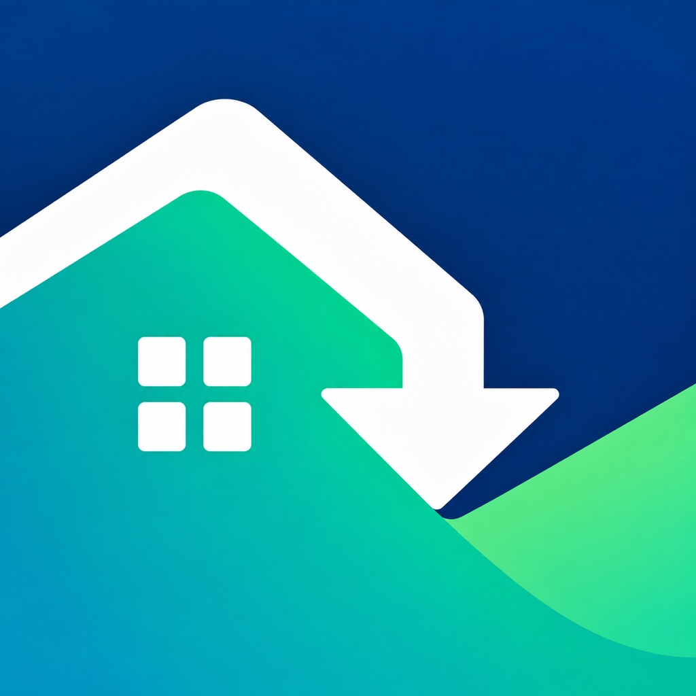

Offset Support
Offset helps you estimate clean-energy incentives and organize the steps needed to claim them.
Contact
For app issues, feedback, or accessibility support, email sujalbhakare101205@gmail.com.
Common questions
Are estimates guaranteed?
No. Program administrators determine final eligibility and benefit amounts. Open the official source shown on each program before committing to a purchase.
Where is my data stored?
Your profile, saved projects, and checklist progress are stored locally on your device. See the privacy policy for details about optional notifications and subscriptions.
How do I restore Premium?
Open Offset Settings and choose Restore Purchases while signed into the Apple Account that made the purchase.
How do I cancel Premium?
Open iOS Settings, tap your name, choose Subscriptions, select Offset, and choose Cancel Subscription.